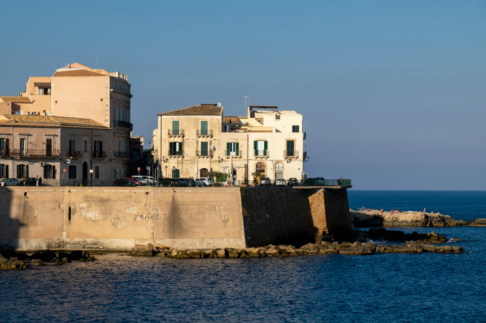
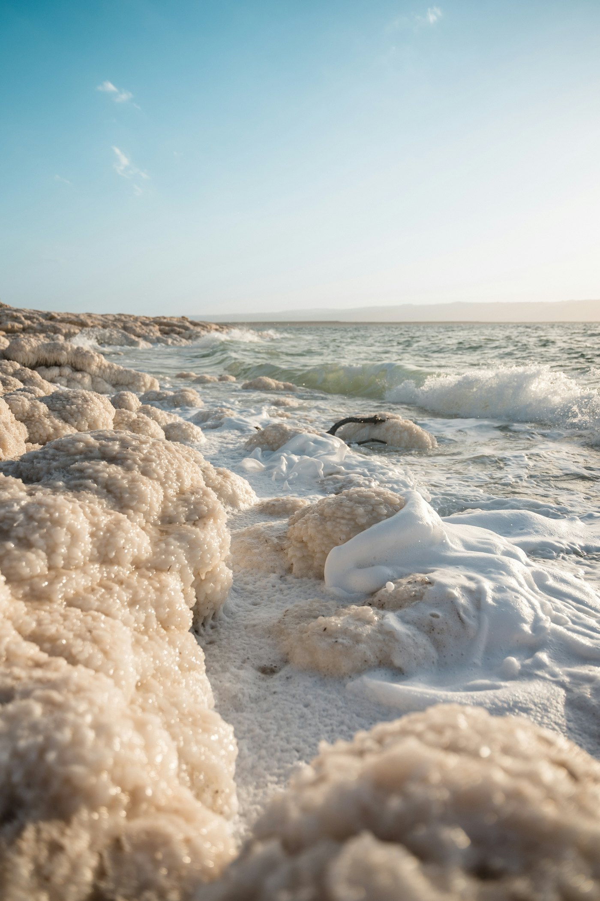

In libreria
Si ordina in qualsiasi libreria con il codice ISBN. Arriva in due o tre giorni.
Copia l'ISBNUna casa sopra gli scogli, quattro sorelle tornate per venderla e una stanza chiusa a chiave per ogni anno della loro famiglia.
Scorrete e il libro si apre: la copertina, poi le pagine, una alla volta. Le stesse che troverete in libreria.
Dopo la morte della madre, Teresa, Lia, Nina e Agata tornano nella casa sopra il porto per venderla. Trovano ogni porta chiusa e, in un cassetto della cucina, un mazzo di chiavi con un cartoncino legato a ciascuna: un anno, nient'altro.
Decidono di aprire una stanza al giorno. Ogni porta restituisce un pezzo di famiglia che nessuna di loro conosceva: un telaio, un registro di pesca, una lettera mai spedita. Il compratore aspetta, il paese osserva, il mare entra dalle finestre.


Nessuna di noi sapeva contare all'indietro fino a quegli anni. La casa sì, e aveva aspettato che tornassimo tutte e quattro per cominciare.Le stanze del mare · pagina 11
Ogni parte del romanzo apre una stanza. Toccate una chiave.
Si ordina in qualsiasi libreria con il codice ISBN. Arriva in due o tre giorni.
Copia l'ISBNSui principali store, cartaceo con consegna a casa.
Vai allo storePer chi legge sul telefono o sul lettore, in tutti i formati.
Scarica l'eBookCopia firmata dall'autrice, spedita a casa vostra o a chi volete regalarla.
RichiedilaLo stampate sul retro di copertina, sui segnalibri e sulle locandine delle presentazioni. Chi lo inquadra arriva qui, alla prefazione, e da qui alla libreria.
Marta incontra lettori in libreria, classi e circoli di lettura. Scrivete qui: rispondiamo entro due giorni.
Il vostro testo impaginato come nel libro, con le pagine che girano allo scroll e una versione a schede sul telefono.
PNG ad alta risoluzione per il retro di copertina e un segnalibro stampabile, con un indirizzo che non cambia mai.
Il QR porta un codice di tracciamento: sapete quante visite arrivano dal libro, dalle locandine e dai social.
Richieste di presentazioni, copie con dedica e stampa in un unico modulo, smistate per motivo.
Un indirizzo breve come lestanzedelmare.it, facile da dire in radio e da scrivere su una locandina.
Nuove presentazioni, recensioni e ristampe si aggiungono senza rifare nulla.